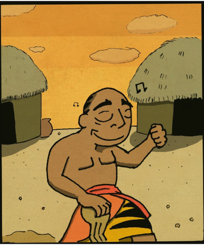
Once upon a time there lived a wise man by the name of Mamad.
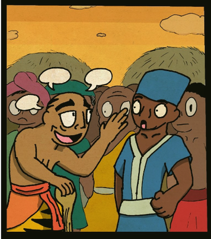
He never lied. All the people in the land, even the ones who lived twenty days away, knew about him.
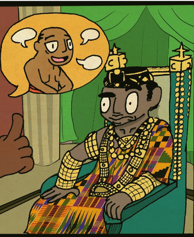
The king heard about Mamad and ordered his subjects to bring him to the palace.
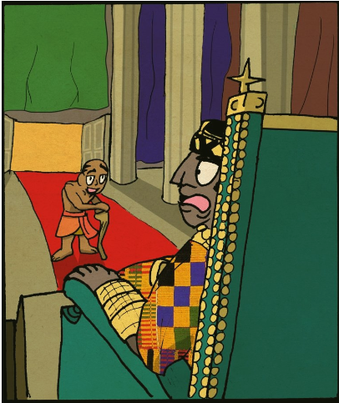
He looked at the wise man and asked:
"Mamad, is it true, that you have never lied?"
"It's true."
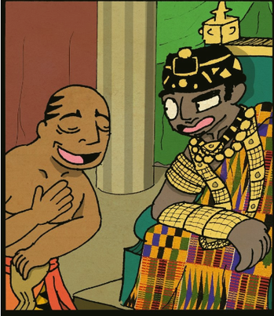
"And you will never lie in your life?"
"I'm sure about that."
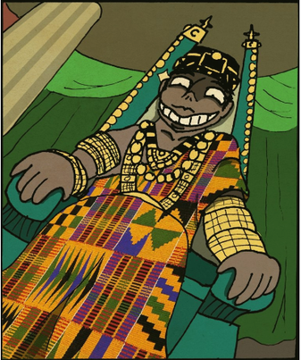
"Okay, tell the truth, but be careful! The lie is cunning and it gets on your tongue easily."
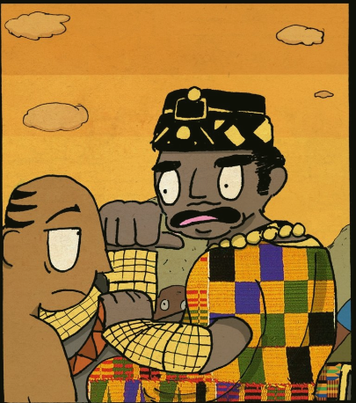
Several days passed and the king called Mamad once again. There was a big crowd: the king was about to go hunting. The king held his horse by the mane; his left foot was already on the stirrup.
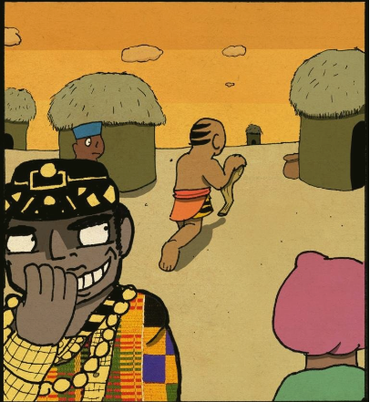
He ordered Mamad:
"Go to my summer palace and tell the queen I will be with her for lunch. Tell her to prepare a big feast. You will have lunch with me then."
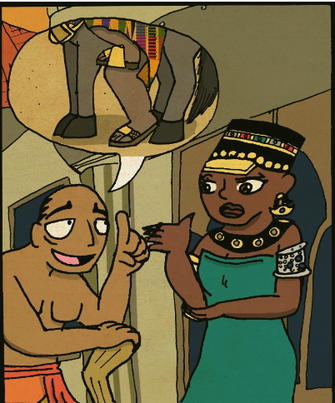
Mamad bowed down and went to the queen. Then the king laughed and said:
"We won't go hunting and now Mamad will lie to the queen. Tomorrow we will laugh on his behalf.”
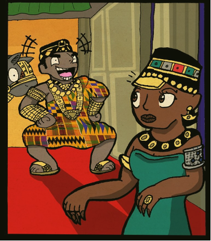
Everybody waited for the king. He came the next day and said to the queen:
"The wise Mamad, who never lies, lied to you yesterday."
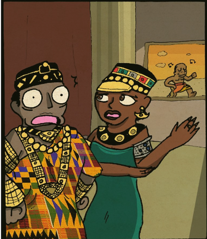
But the queen told him about the words of Mamad. And the king realized that the wise man never lies, and says only that which he saw with his own eyes.